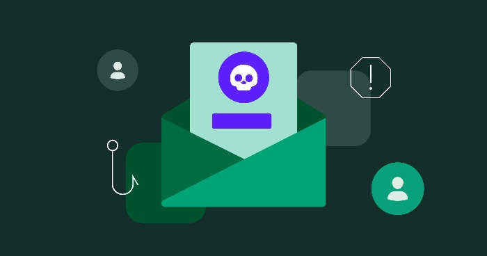
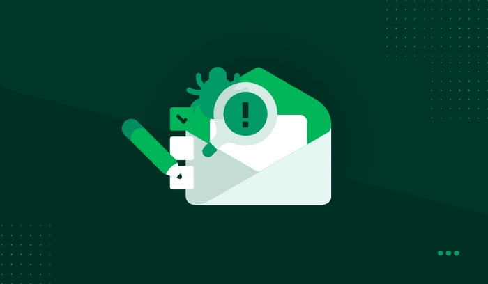

Most people have received a phishing email at some point, but not everyone knows how to identify them. Phishing scams are designed to trick you into giving away your personal information, and they can be hard to spot. But there are some things you can look for that will help you tell if an email is a phishing scam.
First, check the sender's address. If it's not from a company or organization you recognize, be suspicious. Second, look for typos and grammatical errors in the email. These are often a sign that the email is not legitimate. Third, be wary of any email that asks you for personal information or financial information. If an email is asking for this kind of information, it's likely a phishing scam.
Cybercrime is on the rise, and phishing is one of the most common attacks. Phishing is when a cybercriminal pretends to be a legitimate organization in order to trick you into giving them sensitive information. They may do this by sending an email that looks like it’s from your bank, or by setting up a fake website that looks like a legitimate website. It’s important to be aware of these attacks and know how to prevent phishing .

The company imitation of the company: One of the more prominent types of cybercrime is the name impersonation that occurs with email sent using a domain that is similar to your target organization. It is also complicated for firms to detect because you won't know if anyone has actually been duped into calling a phone number or email or carrying out transactions till it happens to you or someone reports to your account.
Spear phishing is an example of phishing: Using a fake name (impersonation) but also key information about the target, this type of scheme involves using the details of a victim (employees) to extort additional victims. Here, the exact same sequence is exaggerated such that it can be used for thievery. A business opportunity might be believable, but we need to be careful to exchange information.
Email takeover occurs when you change your password: All members of your administration and executive team are designed to be vulnerable. If a phishing scammer gets your email to contact you credentials for a high-profile executive, it is likely that they will target anyone that they can have similar email addresses. Potential targets will include: colleagues, teammates, and even customers (if they have already obtained this information through a hacker).
Email phishing scams: Based on the email message or identity theft, this fraud is similar in format to the email ID takeover scam. The difference is that the malicious party uses an email address that is familiar or legitimate. The email may include a request to click a link, change a password, send money, respond to insecure information, or open a file attachment.
Voice Phishing or Phone Phishing: Voice over Internet Protocol (VoIP) technology enables scammers, again, to impersonate companies. This method also uses other kinds of phishing, including using personal details about victims and impersonating individual members of the company (e.g., the CEO) to obtain a higher return on investment.

Companies must examine and update their software and hardware security features to guard against phishing attacks. It's crucial that employees are aware of some of these attacks and their risks so they can respond appropriately when an issue is detected.
In conclusion, Phishing scams are becoming more sophisticated every day. These crooks will stop at nothing to get your money. They use email, text messages, social media sites, and even phone call messages to convince you of something. They can even pretend to be from the IRS, the FBI, or your bank. Being aware of these scams and making sure that you aren't a victim, is the first step to stopping this fraud.